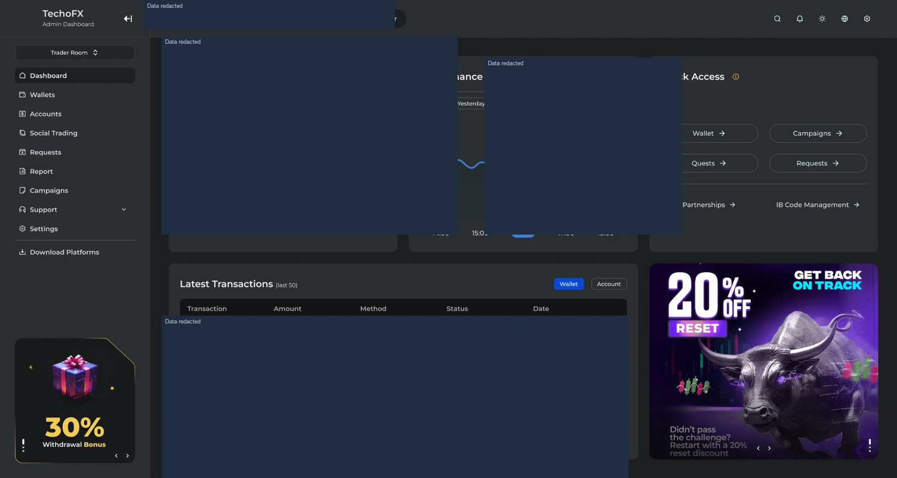
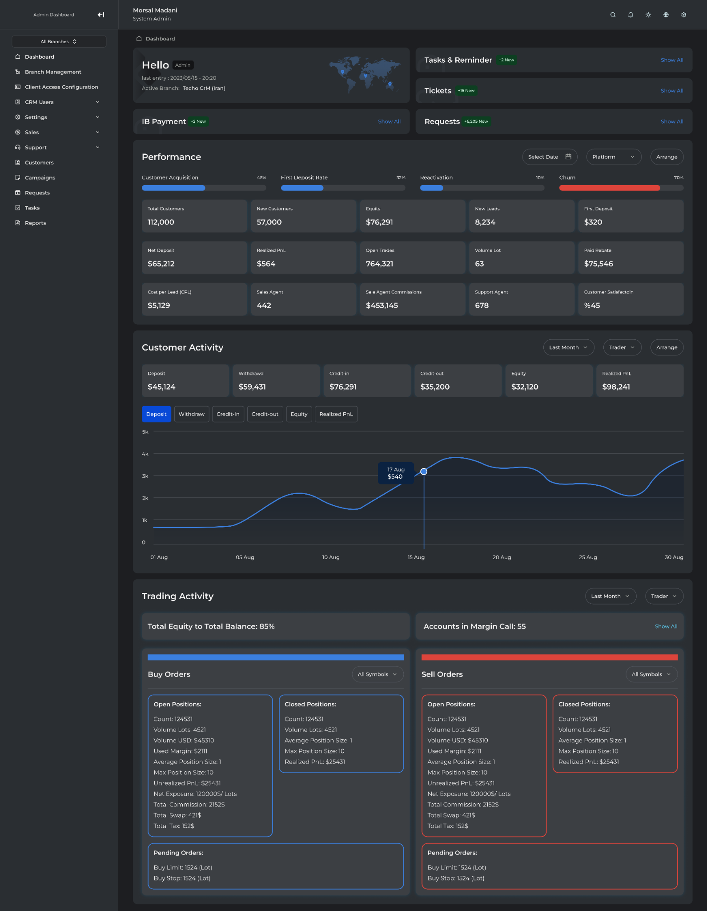
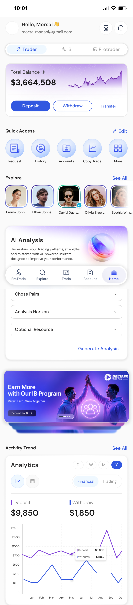

FinTech / Product Work
Brokerage CRM Ecosystem
A replacement brokerage CRM delivered in under eight months with the existing engineering and QA teams.

Trader room: accounts, wallets, performance and quick-access workflows.
Product Overview
A brokerage CRM connecting client onboarding, KYC, wallets, trading accounts, support and back-office operations. The administration dashboard and trader room serve different users within one connected customer journey.
Business Problem
Legacy workflows and fragmented systems made brokerage operations difficult to coordinate. Modernizing the CRM required clearer requirements, usable workflows and a delivery process that could work with the existing teams.
Target Users
Traders, brokerage operations and support teams, introducing brokers and ProTraders. Each group needs access to the accounts, requests and information relevant to its role.
My Role & Ownership
As Product Manager at Top Fast Technology from May 2023–May 2024, I directly led discovery, redesign, requirements, prioritization and delivery. I worked with product designers, .NET/React engineers and QA from problem definition through release and improvement.
Product Discovery & Strategy
I introduced structured discovery, stakeholder-validated Figma prototypes, prioritized backlogs, Event Storming and clear role responsibilities. Usability testing, Hotjar and direct customer feedback helped refine requirements and design handoffs.
Key Product Decisions & Capabilities
The product connects onboarding and KYC with wallets, requests, support and account management. Roles, permissions and reporting support back-office control, while IB, social-trading and risk connections keep the wider brokerage journey in view. I managed priorities across these connected customer and operational workflows.
Delivery & Cross-functional Collaboration
I coordinated delivery with the existing .NET/React engineering and QA teams, brought QA into the lifecycle earlier and collaborated on an ABP-based microservices transition. The native Flutter CRM is a separate product stream, covered in its own case study.
Outcomes & Product Value
The replacement CRM was delivered in under eight months using the existing engineering resources and deployed across multiple brokerages, including DeltaFX. It brought customer and operational workflows into a modernized product while establishing a more structured discovery-to-delivery process.
Product Screens
Explore the interfaces and workflows below.



View full image ↗

View full image ↗